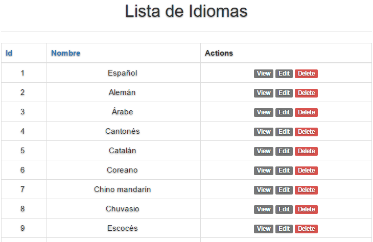
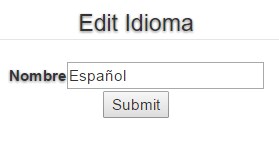

Capítulo 3 Idiomas
aqui puedes encontarar las acciones que puedes hacer en las tablas clientes.
3.1 Tabla Idiomas

Figura 3.1 Tabla Idiomas
En la tabla Idiomas puedes editar, eliminar y ver un cliente.
3.2 Vista del idioma

Figura 3.2 vista Idiomas
En ver el idioma podemos ver los datos del idioma(no podremos hacer modificaciones).
3.3 Editar Idiomas

Figura 3.3 Editar Idiomas
Aqui podremos modificar los datos del idioma.
3.4 Acciones Idiomas

Figura 3.4 Acciones Idiomas
Estas son las acciones que se pueden hacer desde idiomas.
Índice de contenidos
- Idiomas
- 3.1 Tabla Idiomas
- 3.2 Vista del idioma
- 3.3 Editar Idiomas
- 3.4 Acciones Idiomas